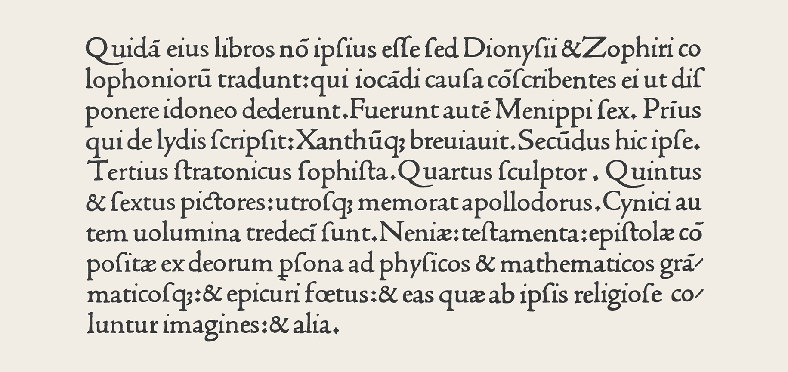
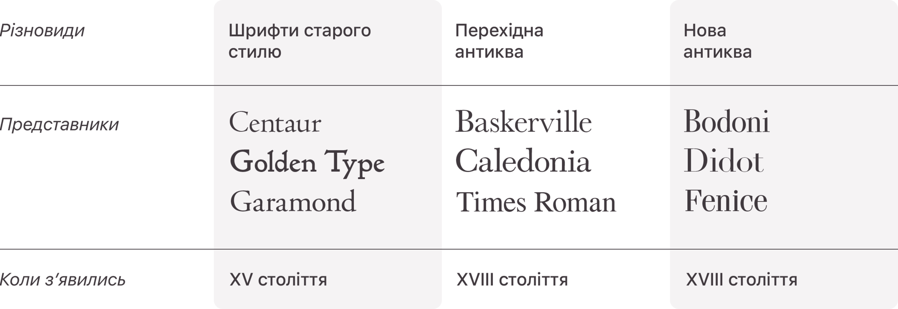
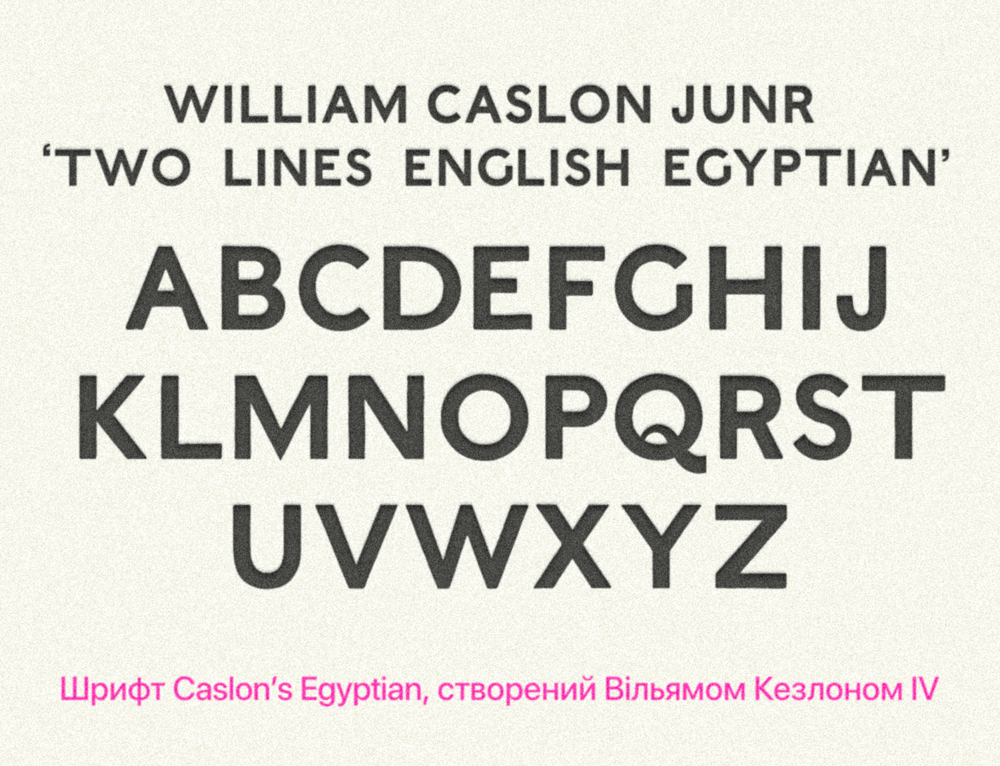
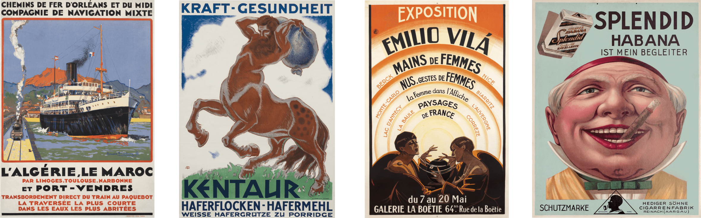
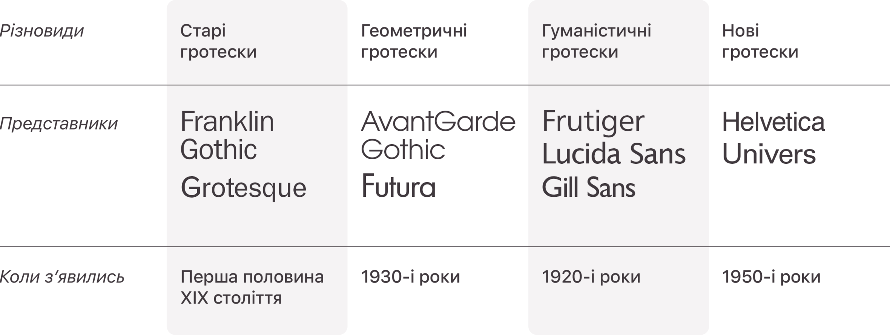
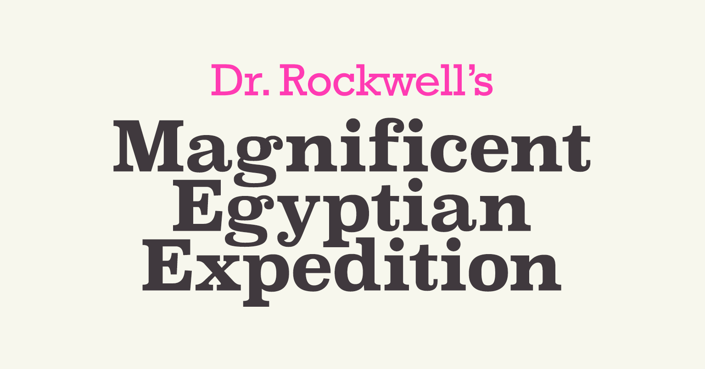
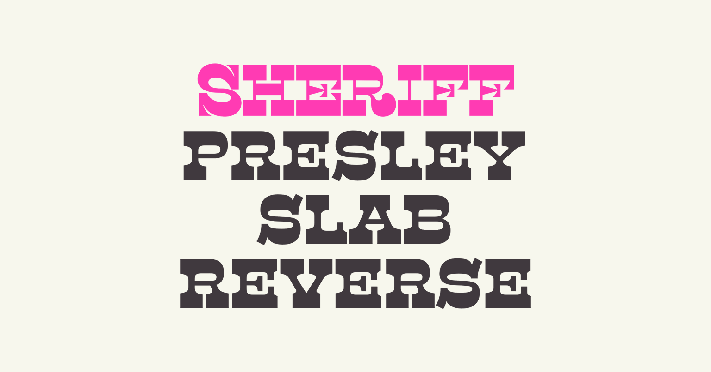
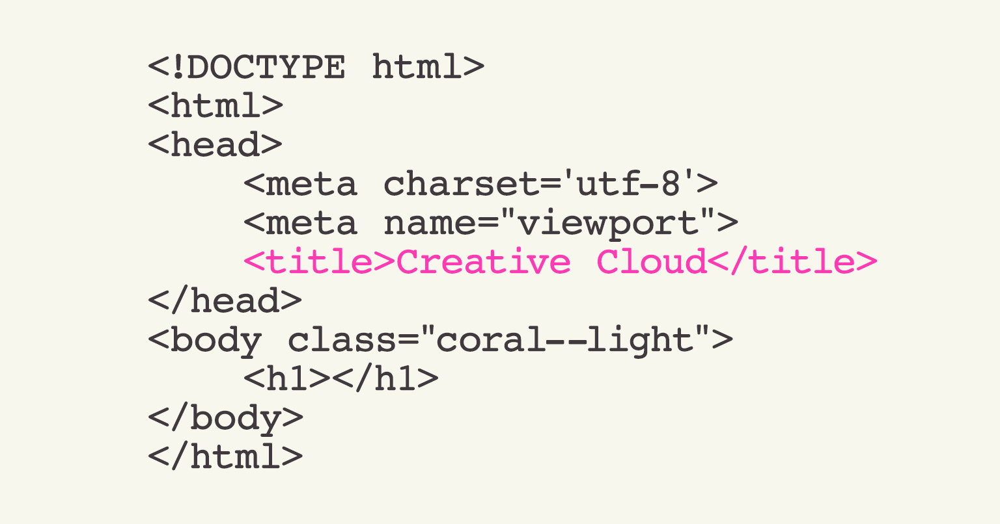
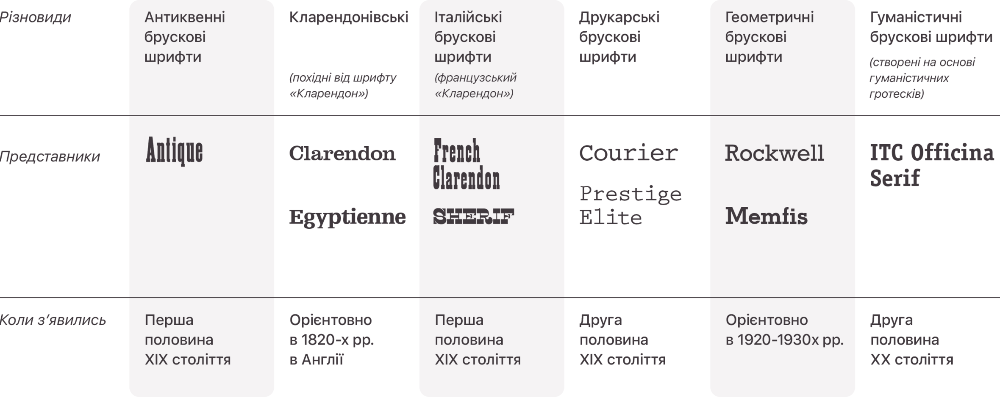

Шрифти з зарубками
Їх також називають антиквенними шрифтами або просто антиквами. Ця варіація назви походить від латинського слова antīqua, тобто «стародавній». Одні з перших шрифтів цього типу з’явились ще в XV столітті. Але стародавніми вони називаються з іншої причини. Період появи цих шрифтів прийшовся на Раннє Відродження. В цей період пробуджувався інтерес до античності, і зокрема — серед писців та типографів.
Будова та зовнішній вигляд цих шрифтів чимало особливостей запозичили в римського маюскульного шрифту. Того, яким в Римській імперії висікались написи на храмах та пам’ятниках. Через таке походження цю групу шрифтів ще іноді називають романськими, тобто римськими. Але на відміну від справжніх римських шрифтів, в антиквенних шрифтах з’явились рядкові літери. В період з XV по початок XIX століття більшість друкованих видань та плакатів створювались саме з використанням антиквенних шрифтів. Їх будова протягом століть зазнавала певні зміни — по мірі розвитку друкарських технологій та через зміну актуальної моди — але загальні конструктивні принципи зберігались.
Назва англійською — serif fonts. Serif — це буквально «зарубки».
Шрифти без зарубок
Тривалий час зарубки в шрифтах були технічною необхідністю. При висіченні написів на камені без них було майже неможливо уникнути розтріскувань, а при писанні пером — розтікань чорнил. Але по мірі розвитку друкарської справи, вдосконалення друкарських станків та технології виготовлення паперу, зарубки перестали бути справжньою необхідністю. З часом вони перетворились на своєрідний рудиментарний елемент будови шрифту та виконували радше декоративну функцію. При цьому, оскільки більша частина написів складалась саме зі шрифтів із зарубками, позбавлений від них шрифт, був майже приречений виділятись на їх фоні. Вважається, що одним з перших шрифтів цієї групи став Єгипетський шрифт Кезлона (англ. Caslon’s Egyptian), створений Вільямом Кезлоном IV на початку XIX століття.
Тоді новий шрифт прийняли погано. Його називали «гротескним» та «готичним». Саме слово «гротеск» походить від французького слова grotesque, яке можна перекласти як «чудернацький», тож в ній відбиваються одночасно декілька сенсів: незвичність будови шрифту відносно традиційної та здатність шрифта привертати увагу своїм виглядом. Власне, певний час саме з метою привернення уваги набрані цим шрифтом написи і використовувались — в заголовках, плакатах, рекламі. Але з часом гротескні шрифти почали використовуватись і в якості основних при верстці книг. В ХХ столітті шрифти цієї групи набули більшого поширення і почали поступово сприйматись як більш сучасні, відповідні епосі. В своїй роботі «Нова типографія», що була вперше видана в 1928 році, Ян Чіхольд навіть писав: З усіх шрифтів минулого духу нашого часу найліпше відповідають так званий гротеск або рубаний шрифт.
Певно, це твердження є справедливим і сьогодні. Розвиток гротескних шрифтів продовжився після публікації «Нової типографії» (і певною мірою, під впливом цієї книги). Якщо перші гротески наслідували деякі конструктивні особливості антикв, то з плином часу їх будова ставала все більш автентичною, самостійною, актуальною. Тепер ці шрифти часто використовуються в логотипах, навігації, інтерфейсах мобільних застосунків.
Назва англійською — sans-serif fonts. Sans-serif перекладається як «беззарубкові» або «без зарубок».
Брускові шрифти
Інша назва брускових шрифтів — єгипетські. Як і у випадку з антиквенними шрифтами, назва тут дещо оманлива. В будові єгипетських шрифтів немає нічого єгипетського. Просто період їх появи співпадає з періодом захоплення давньоєгипетською культурою, що спалахнув з новою силою після єгипетського походу Наполеона в період з 1798 по 1801 рік. В книзі дизайнера Юрія Гордона наводиться гіпотеза, відповідно до якої форма перших брускових шрифтів була подібна до шрифта іменних написів французьких кораблів, що брали участь у цій кампанії. Правда це чи лише здогадка, тепер вже важко визначити, але вплив захоплення Єгиптом позначився, зокрема, на назвах деяких брускових шрифтів — «Каїр» (Cairo), «Карнак» (Karnak) та «Мемфіс» (Memfis).
Брускові шрифти можна було б віднести до групи шрифтів із зарубками, але їх форма була суттєво відмінною від зарубок антиквенних шрифтів. В антикві зарубки мали другорядну роль по відношенню до основних штрихів, що підкреслювалось їх тонким нарисом. А от в брускових шрифтах зарубки та основні штрихи були врівноважені. А в деяких підгрупах брускових шрифтів, — їх ще називають італійськими брусковими шрифтами, — вони навіть були товстішими, ніж стем (таку особливість будови у шрифтах ще називають зворотнім контрастом, про те, що таке контраст шрифта ми докладніше розповімо в наступному матеріалі).
Перші брускові шрифти з’явились як спосіб виділяти окремі написи, адже через власну форму вони виглядали більш помітно в заголовках, на вивісках, плакатах, вітринах та у рекламі. Втім згодом стали з’являтись модифікації брускових шрифтів, якими можна було комфортно набирати значні масиви текстів. Їх безумовною перевагою було те, що вони добре зчитувалися майже в будь-якому масштабі, і через виразні зарубки робили й набрані ними тексти більш виразними. Через таку якість, зокрема, їх використовували для друкарських машинок, а згодом і для редакторів програмного коду.
І хоч в брускових шрифтів була менш тривала історія, ніж в антиквенних, вони теж пройшли власну еволюцію, і форма цього типу шрифтів змінювалась з часом.
Назва англійською — slab-serif fonts. Slab-serif — це «брускові зарубки».